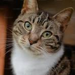

Owning a pet is very rewarding. Pet ownership however is often hard and very expensive for a variety of reasons. One of these reasons being that pets need to visit the vet. Pets can also be hard to own as they often will do things you do not want them to do.
However even with these facts a lot of people find having a pet to be better than not. Pets come in all different kinds for all different types of people. Some people prefer cats because they are less maintenance. Some people prefer dogs due to their loyalty
| Pet | Average cost/yr |
|---|---|
| Cat | $1,100 |
| Dog | $1,600 |
| Bird | $500 |